Select a formula. The tree is the counted operator graph, including Pow2/3/4 collapse.
The original tag is for expressions from Constantin (GitHub). Extension is a tag for expressions that are not in the original set.
Each dot is one expression. The x-axis is its complexity. β minimises , where is the frequency of rank and over the ranks that appear. The horizontal line is the same fit after every expression's operator counts in that corpus are added together and ranked once. Feynman is the released 100. Wikipedia adds the algebraic extension after Doppler. f(R) is included.
The ledger begins from the data release accompanying Statistical Patterns in the Equations of Physics and the Emergence of a Meta-Law of Nature (Constantin, Bartlett, Desmond and Ferreira), physics-formulae-patterns at commit 2aa199b. That commit contains three corpora: 100 expressions from the Feynman Lectures, 41 from the Wikipedia list of equations named after people, and 70 potentials from the Encyclopaedia Inflationaris. Each released expression is kept under the status original.
Two further collections were then brought into the ledger. From the same Wikipedia list, 35 expressions following the cutoff were transcribed, so that this Wikipedia corpus consists of 76 expressions. For the later analysis, the ledger also holds the Leemis univariate distributions. They are not part of commit 2aa199b.
Ten closed forms of written as examples in Sotiriou and Faraoni, arXiv:0805.1726, are in the ledger as well. They are not part of commit 2aa199b.
Operator counts were recomputed from the parsed expression. Physical constants are distinguished from variables. The resulting counts of variables, numbers, constants, and complexity are placed beside the tallies in commit 2aa199b, and a row on which they differ is marked.
Each expression is rendered in LaTeX, has its expression tree drawn, and linked to its source.
We propose fitting the parameter by least squares on the differences of logarithms of the predicted and actual rank frequency. It minimises , where is the frequency of rank .
For the exponential,
For Zipf–Mandelbrot,
The fit uses SciPy’s , with no bounds on the parameters. Both formulas are fitted, with this loss, to each of the three corpora: the released Feynman lectures (100 expressions), Wikipedia with the extension (76), and the Encyclopaedia Inflationaris (70). The exponential is started at . Zipf–Mandelbrot is started at , .
Each panel is one corpus. The points are the rank frequencies, and the two curves are the exponential and Zipf–Mandelbrot fits from the setup above.
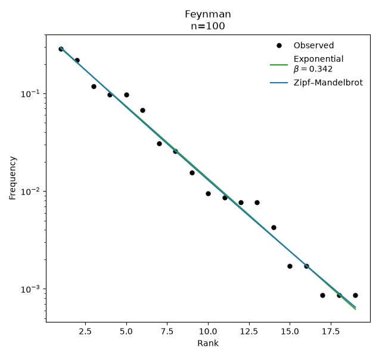
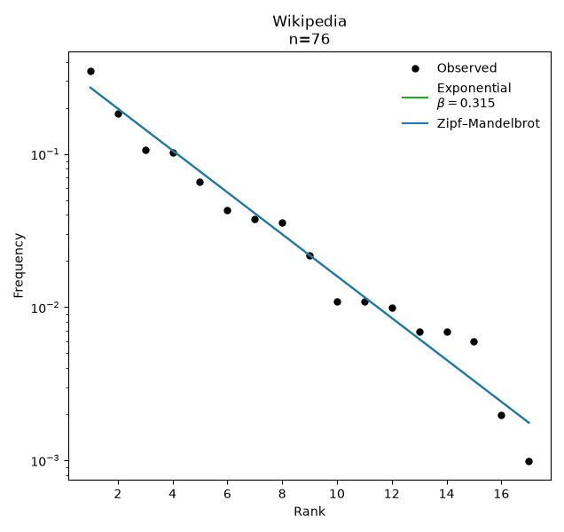
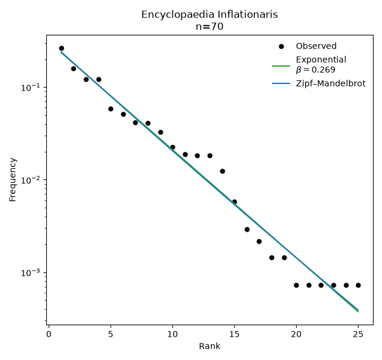
| Corpus | Formulas | of the exponential | Published posterior | |||
|---|---|---|---|---|---|---|
| Feynman | 100 | 73.5 ± 178 | 206 ± 519 | 0.356 ± 0.038 | 0.342 ± 0.007 | 0.342 ± 0.010 |
| Wikipedia, released + extension | 76 | 1640 ± 2.0×10⁵ | 5210 ± 6.2×10⁵ | 0.316 ± 0.067 | 0.315 ± 0.010 | (0.35 ± 0.03)* |
| Encyclopaedia Inflationaris | 70 | 93.9 ± 344 | 338 ± 1280 | 0.278 ± 0.035 | 0.269 ± 0.006 | 0.266 ± 0.014 |
returns the optimal parameters and , their estimated covariance. The diagonals of the covariance provide the variance of the parameter estimate, and the standard deviation errors on the parameters can be optained by the square roots of the diagonals.
* The published posterior for Wikipedia is the authors' value for their list of 78 expressions. The corpus fitted here adds the 35 expressions after the cutoff of 41, so the two lists are not the same.
On the three corpora released, the exponential from this fit lies close to the published simulation-based posterior: 0.342 against 0.342 ± 0.010 for Feynman, and 0.269 against 0.266 ± 0.014 for Encyclopaedia Inflationaris.
When is large when compared to the ranks, Zipf–Mandelbrot is the exponential written with two parameters. Factor out of the power,
For the logarithm expands as
The leading term produces
The factor does not depend on the rank, so it cancels when is normalised, and the result is the exponential with . The next term, , stays small while .
The original paper draws from 1 to 10 and from 2 to 20. Both upper ends lie below the values this fit reaches.
Encyclopaedia Inflationaris has , against 0.342 for Feynman and 0.315 for Wikipedia with the extension. The possible accounts are:
By using the natural units for Feynman and Wikipedia, and setting the EI prefactor to 1, we can measure how much do the conventions of constants affect the fitted beta.
Setting and together moves Feynman from 0.342 ± 0.006 to 0.332 ± 0.006, with 32 formulas changed, and leaves Wikipedia at 0.315 ± 0.010, with 2 formulas changed.
Setting in all 70 Inflationaris potentials moves from 0.269 ± 0.006 to 0.261 ± 0.006.
Neither rewrite makes the beta of Encyclopaedia Inflationaris meet Feynman or Wikipedia. Natural units and the repeated energy-density prefactor alone do not account for the deviation.
The standard General Theorey of Relativity is governed by the Einstein–Hilbert action , where is the Ricci scalar. A class of higher-order curvature invariant modified theories of gravity, specifically the f(R) theories, replace the Einstein–Hilbert action with . We curated ten closed forms of expressions, which together are candidates to one physical concept, the function in the gravitational action, which are also expressions of an unproven theory. When the operator counts of these f(R) expressions are pooled, the exponetial fit of this corpus has 0.320 ± 0.021. The corpus being around one concept, and an unproven theory, do not by themselves produce the lower value.
The corpus has 10 expressions and Encyclopaedia Inflationaris has 70. To adjust for that difference in sample size, 2000 samples of 10 expressions were drawn from the EI 70 with seed 20260930. The median is 0.245, most samples fall between 0.230 and 0.259, and the highest sample is 0.305. The difference in corpus size does not seem to explain the difference in .
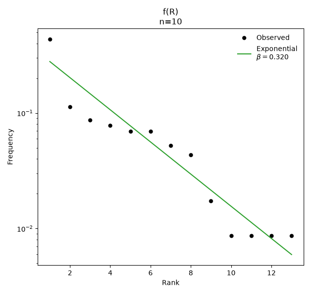
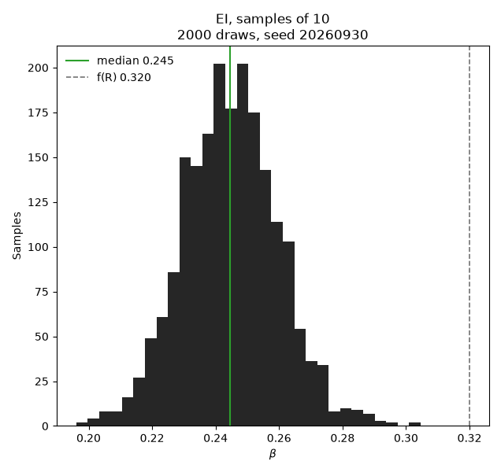
The remaining account is an energy scale different from the quantities in Feynman and Wikipedia. That difference may be that different branches of physics carry different signatures in the operators they use, and therefore different .
We label the Feynman and Wikipedia expressions by branch, and merge branches with few expressions. We fit exponential law to these branches, and the estimates of run from 0.330 to 0.378. The Cambridge Handbook, about 800 expressions, is the natural corpus for enriching the number of expressions of each branch for a more significant fit result.
Leemis, a corpus of univariate distributions, has the same as Encyclopaedia Inflationaris, 0.269. That shows that a corpus of mathematical distributions also follows the exponential metalaw.
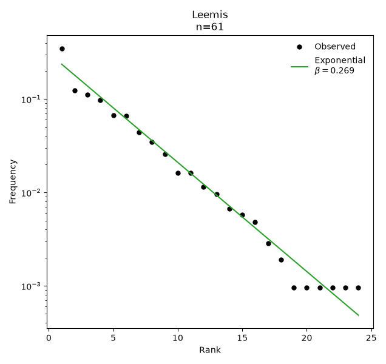
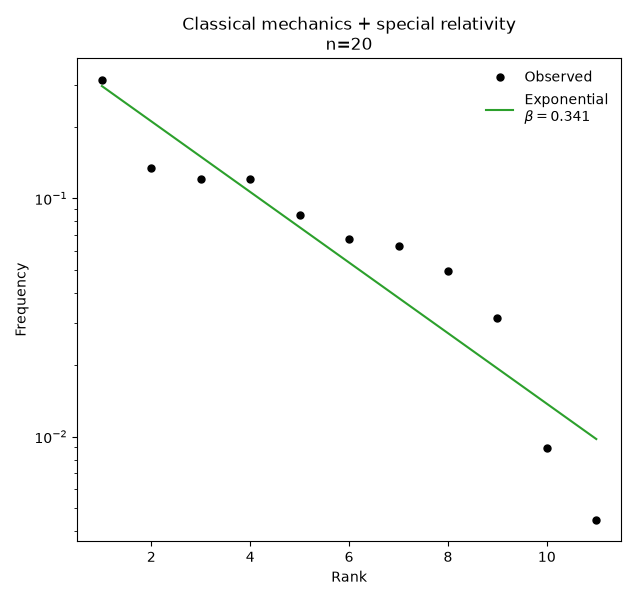
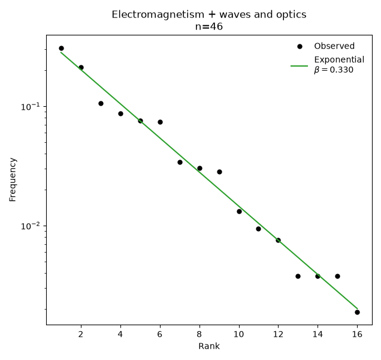
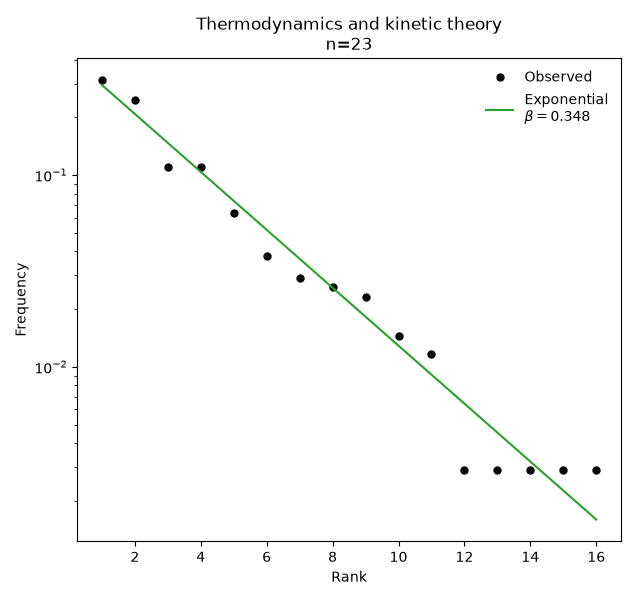
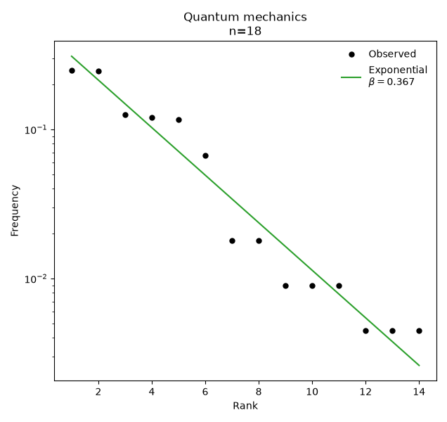
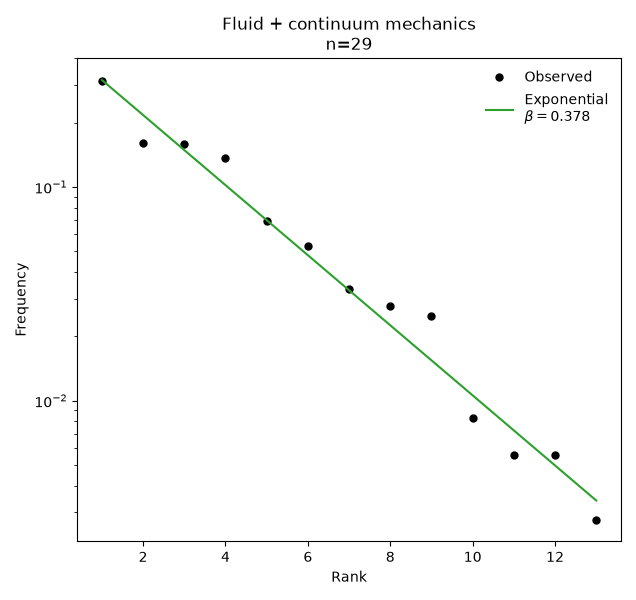
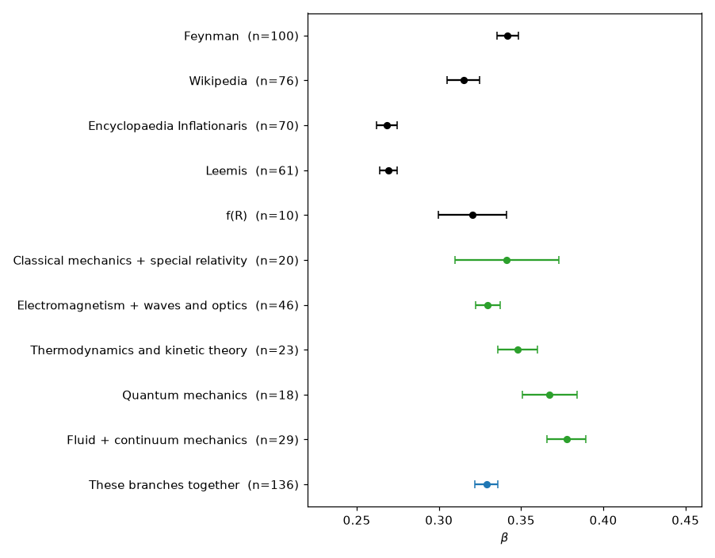
| Branch | Formulas | Median complexity | Log least squares |
|---|---|---|---|
| Classical mechanics + special relativity | 20 | 11 | 0.341 ± 0.032 |
| Electromagnetism + waves and optics | 46 | 10 | 0.330 ± 0.007 |
| Thermodynamics and kinetic theory | 23 | 12 | 0.348 ± 0.012 |
| Quantum mechanics | 18 | 11 | 0.367 ± 0.017 |
| Fluid + continuum mechanics | 29 | 10 | 0.378 ± 0.012 |
| These branches together | 136 | 11 | 0.329 ± 0.007 |
Select a formula. The tree is the counted operator graph, including Pow2/3/4 collapse.